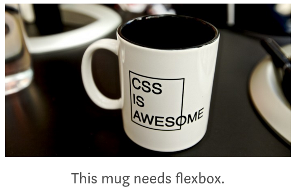

Due Date: B period: Wednesday, 4/24/19, G period: Tuesday, 4/23/19
Flexbox is a new way of organizing a large set of elements within a container. It automatically adjusts to different screen sizes by changing how many things are in each row. It is favored by most web designers.

- Browse to the mdn Flexbox lesson and read the first half. You may stop just before "Flexible sizing of flex items."
- Work the example as you go.
- When you are done, you must have (at least):
- header, styled
- Make your own choices in the styling, throughout the page.
- section, styled
- 12 articles inside the section
- Choose some interesting content to put in the articles
- Use display
- Use flex-wrap
- Use flex
- Use justify-content (if there isn't much leeway in where the articles display within each one's alloted space, then justify-content won't do much.)
- Add other stuff if you want to.
- Save your finished file.
- Send me an email informing me that you have completed the
assignment.
- If you want to read more, there are many other excellent sites about this topic, including W3School's Flexbox page.